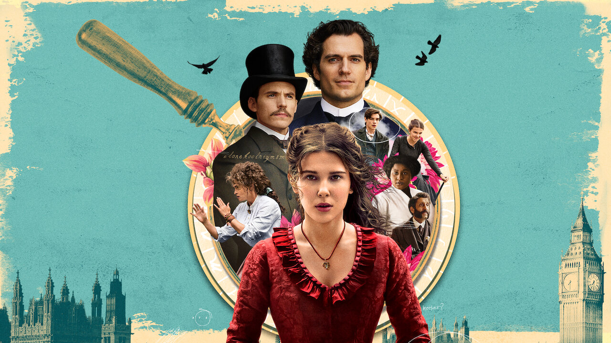

Enola Holmes Saga

Synopsis
Smart and Savvy, The youngest of the Holmes Children- a daughter named Enola- navigates political upheaval, patriarchy, and crime while forging her own path through 18th century Britain. With dreams of becoming a detective, just like older brother Sherlock, she must forge new connections and learn to accept the help of others when she needs it.
Characters:

Enola Holmes
The younger sister of Mycroft and Sherlock Holmes; She lives for adventure. Under the tutelage of her mother, she is learned in Science, Maths, self-defense, instead of sewing and embroidery.
Tewksbury
The young Viscount Tewksbury, Marquess of Basilwether meets Enola Holmes on a train to London. This gentle spirit bonds with her over their shared experiences of being set for a future they do not want. The pair grow very close over the course of the saga.

Sherlock Holmes
The brilliant detective finds solving murder mysteries and toppling criminal empires easier than socializing with family. Nonetheless, he tries to support his younger sister in any way he can.

Mycroft Holmes
The oldest Holmes child is a traditionalist. He believes that only the rich should vote, and that women are only as valuable as the husband they marry.

Eudoria Holmes
The catalyst for Enola's freedom. Eudoria taught her daughter to be independent from a young age; One could argue she taught her too well. She will do whatever it takes to create a world fit for her daughter and other women to live in.